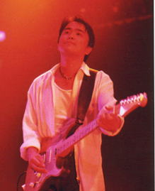

classは、いわゆる“メインとハモリ”が固定されたデュオではなく、どちらもメインボーカルを取れる、本格的なデュオを作りたいというプロデューサーの構想から誕生しました。例えるなら、サイモン＆ガーファンクルのように──互いが主旋律とハモリを自在に切り替える、“声の立体感”を追求したスタイルです。
1992年9月、それぞれソロで活動していた日浦と津久井が引き合わされ、翌日にはデモ制作を開始。初めて一緒に歌った瞬間、「こんなコーラスは初めて…」と、互いに驚いたといいます。
日浦「津久井の声は、自分の声よりもよくハモる。多重録音やバンドのコーラスより自然で驚いた」
津久井「声質も性格も違うのに、歌ってみると、どちらがメロディでどちらがハモリか分からなくなる。この“トリックハーモニー”は武器になると思った」
以降3年間、彼らは「夏の日の1993」のミリオンヒットをはじめ、多くの作品を残しました。ユニット名が決まるまでは「あのデュオ」と呼ばれていたものの、最終的に選ばれたのが「class」。
この名前はラテン語の「crās」（クラース／“明日”の意）に由来し、「今日より明日、もっといいものを」という願いが込められています。もうひとつの由来として、「かつてのクラスメイトのように、スタッフやファンと共に歩みたい」という思いも重ねられています。

日浦孝則
| 立ち位置 | right |
|---|
| 誕生日 | 1960/01/17 |
|---|
| 出身地 | 広島県 |
|---|
| 血液型 | B |
|---|
| 星座 | 山羊座 |
|---|
広島県の瀬戸内海に浮かぶ、人口500人ほどの小さな島で育つ。自然と向き合う生活の中、ラジカセから流れる洋楽ポップスに心を動かされ、感受性豊かな少年時代を過ごした。
中学生でギターを手に入れ、変声期で歌えなくなった苦しさをフォークソングとの出会いが救ってくれた。吉田拓郎に憧れ、70年代初頭の洋楽ポップスからも多くの影響を受ける。
高校ではロックバンドに傾倒。通販でエレキを買い、音楽への情熱から関西の大学へ進学。プロギタリストを志し、コンテストでの評価を経て25歳で上京。
テイチクより一度ソロデビューを果たすも再びアマチュアに戻り、会社員をしながら地道に活動を続ける。持ち込みを重ねた末、再びプロの世界へと戻ってきた。
群馬県桐生市で、機織りのための繊維素材を作る家の長男として生まれる。中学時代は剣道に打ち込みながら、音楽室から聞こえてきたビートルズのナンバーに心を奪われたことが、音楽の道へのきっかけとなった。
井上陽水らをコピーし、中2で学園祭デビュー。高校ではディープ・パープルに影響を受け、黒のレスポールをバイトで購入。以降、ブリティッシュロックからソウル、AOR、フュージョンと幅広く吸収しながら、地元バンドでギター・ヴォーカルとして活動した。
ギター一筋だったが、次第に歌へと傾倒。横浜の米軍キャンプやライブハウスでR&Bをカバーし続ける中、プロデューサーの目に留まることとなる。
ファッションセンスにも定評があり、ダウンタウンを好み、焼酎はお湯割り、タバコはラッキーストライク。マイペースながらも、自分らしさを貫いた生き方は多くの人の記憶に残っている。
2009年10月2日永眠。享年49歳。